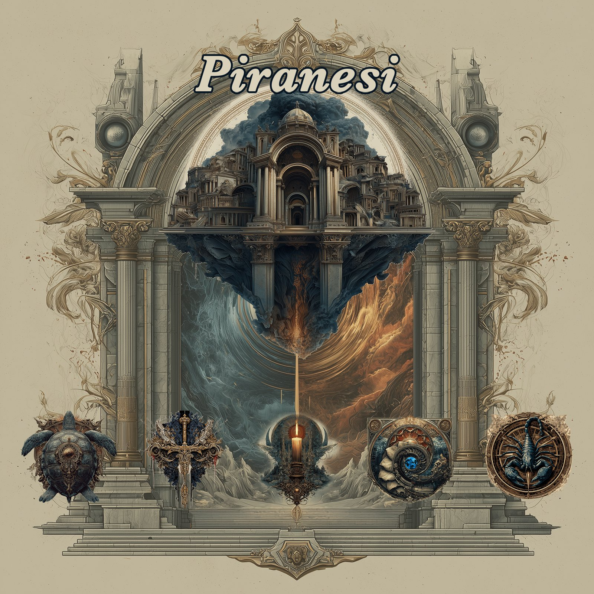
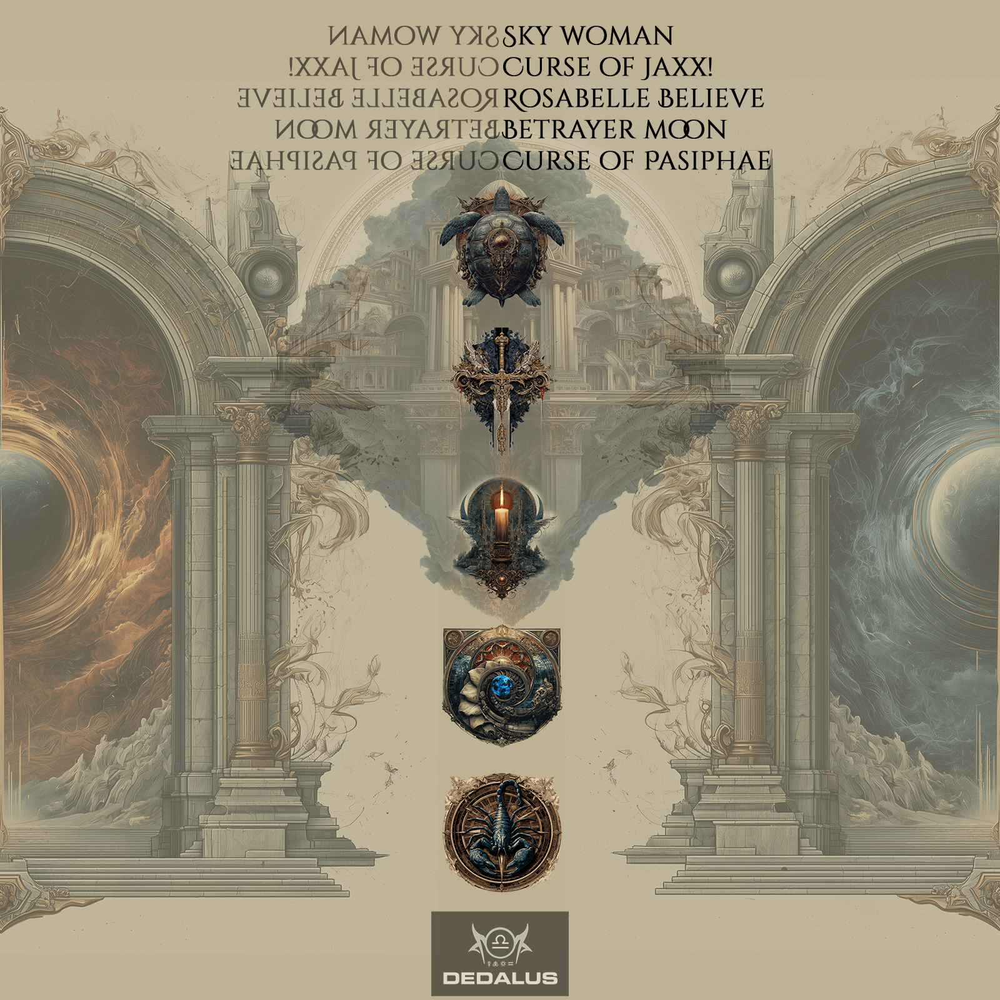

The Five Chambers

Five songs. Five labyrinths. No escape.
Giovanni Battista Piranesi gave us imaginary prisons — impossible architectures of stone and shadow, stairways that lead nowhere, vaults without ceilings. Piranesi is a collection of five songs whose characters find themselves similarly trapped, navigating complex emotional labyrinths of myth, magic, love, betrayal, and loss.
The Carceri d'invenzione — the Imaginary Prisons — were a series of etchings by 18th-century Italian architect Giovanni Battista Piranesi: colossal, impossible interiors of vaulted chambers, crumbling staircases, and machinery without purpose. They were dreamscapes of confinement. Beautiful and terrifying.
This collection of five songs uses those impossible architectures as metaphor. Each character — Sky Woman cast from the heavens, Jaxx! plunging into a well, Houdini's ghost pleading through the veil, a fever-dream wanderer adrift in grief, Pasiphae condemned by a god's cruelty — navigates their own labyrinth.
The songs span myth, history, legend, and pure imagination. What binds them is the architecture of their telling — and the stone walls that each character cannot pass.
Explore the songs →
All lyrics © Joe Wilford 2026